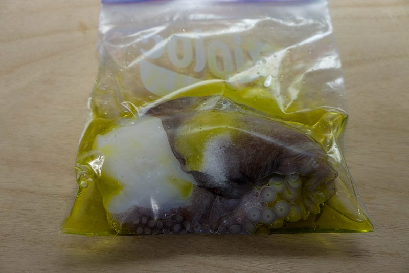
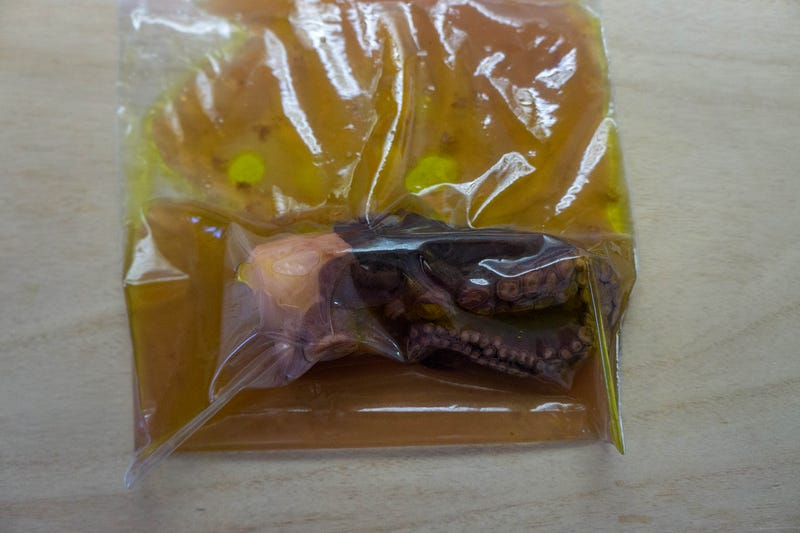
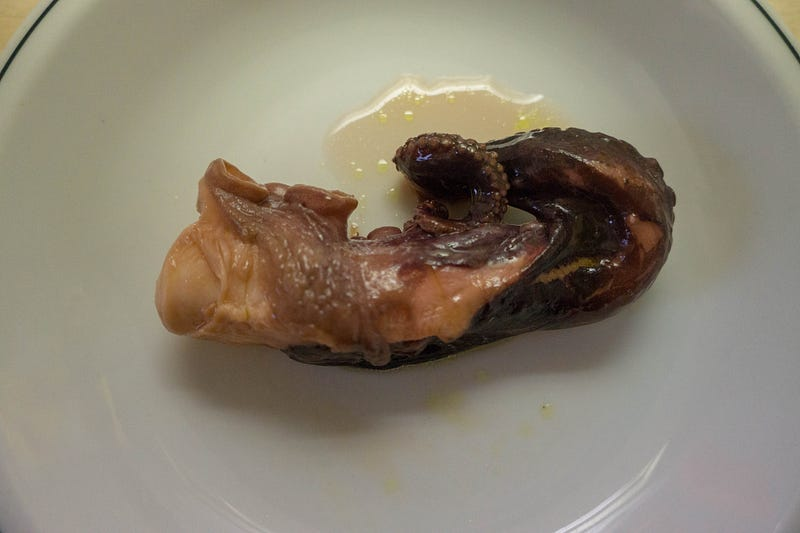
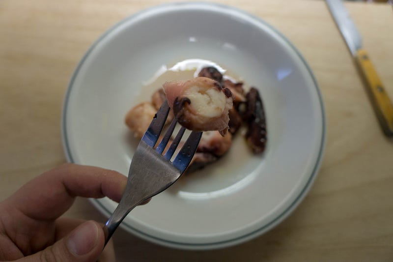

タコを初めて低温調理してみるも、玉砕
タコを初めて低温調理してみるも、玉砕
今までやったことのなかった食材をanovaでやる実験をしてみようと思って、タコをやってみようと思ったのだけど、あまり参考になるレシピが見つからず、試行錯誤でやってみた。
タコの才能 いちばん賢い無脊椎動物 ヒストリカル・スタディーズ
Amazon.co.jp： タコの才能 いちばん賢い無脊椎動物 ヒストリカル・スタディーズ eBook: キャサリン・ハーモン・カレッジ, 高瀬素子: Kindleストアamzn.to
Amazon.co.jp： タコの才能 いちばん賢い無脊椎動物 ヒストリカル・スタディーズ eBook: キャサリン・ハーモン・カレッジ, 高瀬素子: Kindleストアamzn.to
(リンクは本文とは関係ありません）
が、とりあえず第一回目の今回は失敗。
参考にしたのはこちら
Sous Vide Octopus
Octopus is often a chewy dish, but with sous vide, it's easy to enjoy a tender result hassle-free. It's an excellent…recipes.anovaculinary.com
Octopus is often a chewy dish, but with sous vide, it's easy to enjoy a tender result hassle-free. It's an excellent…recipes.anovaculinary.com
生タコの足。これを多めの塩とオリーブオイル少々68℃、約23時間（！）やりました。

タコ、加熱するとすごい小さくなるのね…

ふむ。

切ってみる。

結果。うーん、ぐにっ、って感じ？塩味がきつすぎたのもあるんだけど、食感が狙ってたのとちがってまだぐにぐにしてた。もっとこう繊維がほどける感じが欲しかった…今のところ「圧力鍋でやれ」という気持ちがしている。多分なんか温度設定が違ったんだろうな。
というわけで、また次回やる気になるまでタコはお預け！